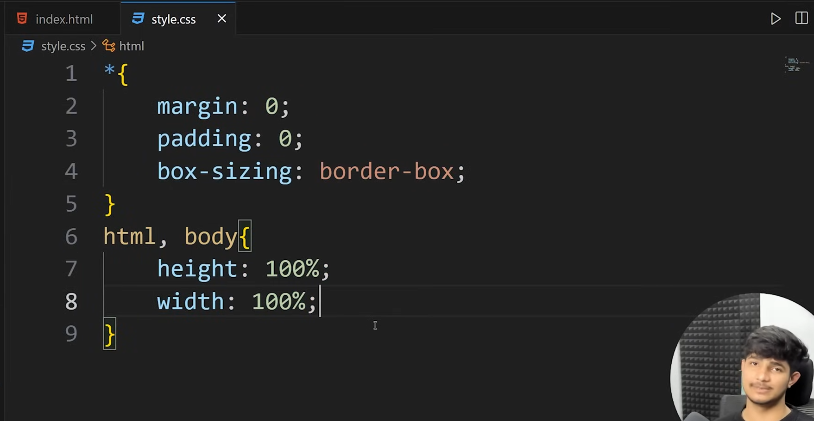
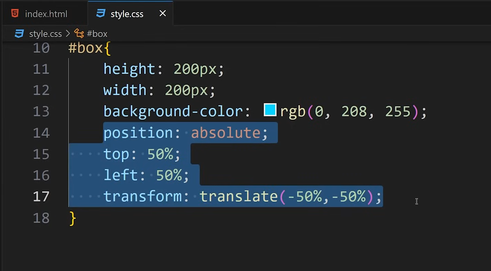

CSS
Introduction
- CSS stands for Cascading style sheets is used to style HTML documents. It is used to describe how the html elements will look on the screen.
CSS Types
- Inline CSS
using style tag. Ex- <body style="background-color: #eaf6f6;" >
inline css has more priority than internal css.
-
Internal CSS
usint style element.
Ex-
<style media="screen">
body{
background-color: #eaf6f6;
}
</style>
-
CSS boilerplate

-
How to set an element at the center of webpage

- No use of position absolute with display flex